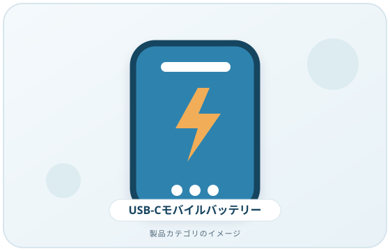
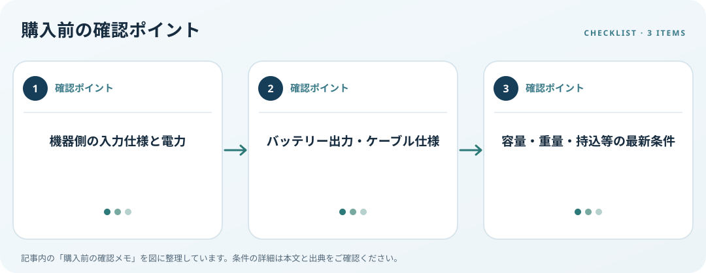

充電対象の入力条件、USB PD出力、ポート、ケーブルと携帯条件を確認します。この記事では仕様の確認順を整理します。
画像・ボタンはAmazonアソシエイトリンクです。適格購入により紹介料を得る場合があります。

Amazon.co.jpで「USB-C モバイルバッテリー PD」を探す ↗

充電対象の仕様を読む
スマートフォン、タブレット、PCなど対象機器のメーカー仕様から入力方式と電力条件を確認します。USB Type-C端子があることとUSB Power Delivery対応は同じ意味ではありません。USB-IFもType-C、データ規格、USB PDを区別して説明しています。双方が対応する条件を照合しましょう。
ポートとケーブルをセットで見る
バッテリーの各ポート出力、複数ポート同時利用時の条件、付属ケーブルの仕様を確認します。ケーブルが用途のデータ・給電機能に対応するかも重要です。Type-Cケーブルは形が同じでも機能が異なるため、必要な電力や機器との組合せを仕様表で確認します。
容量・重量・持込条件
容量、重量、寸法、残量表示、充電時間の測定条件を確認し、使う場所と携帯方法に合うか比べます。容量だけから充電回数を断定せずメーカー条件を参照します。航空機持込や廃棄条件が関係する場合は、航空会社や自治体の最新案内を確認してください。
購入前の確認メモ
- 機器側の入力仕様と電力
- バッテリー出力・ケーブル仕様
- 容量・重量・持込等の最新条件
この記事は出典の公開情報を購入前の確認項目に整理したもので、特定商品の使用・実測・レビュー・ランキング・価格・在庫の調査は行っていません。購入時には利用機器メーカーの最新仕様をご確認ください。
出典
- USB Type-C guidance — USB-IF（確認日: 2026-10-10）
- Cables and Connectors — USB-IF（確認日: 2026-10-10）